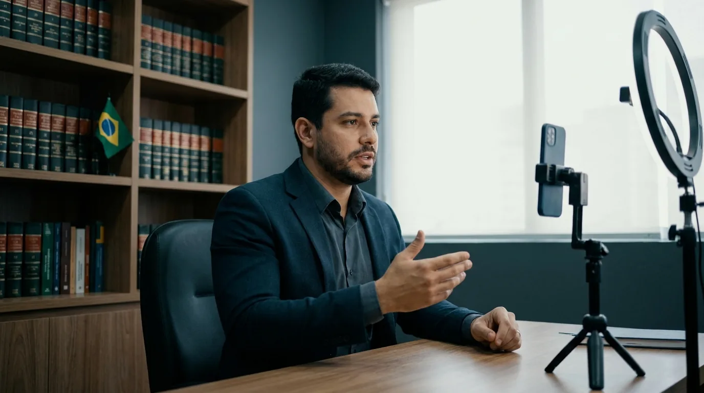

Estatuto da OAB: O que Todo Advogado Precisa Saber
Quase todo advogado estudou o Estatuto da OAB para a prova da Ordem e depois guardou o livro na estante. Só que o Estatuto da OAB continua valendo todos os dias: no fórum, no contrato de honorários, na abertura da sociedade e no post que o escritório publica no Instagram.
A Lei 8.906, de 4 de julho de 1994, tem nome oficial comprido: Estatuto da Advocacia e da Ordem dos Advogados do Brasil. Ela define quem pode advogar, com quais direitos e sob quais punições.
Este guia é um mapa comentado da lei, com os artigos que mais aparecem na rotina e as mudanças das Leis 14.365/2022 e 15.472/2026. No fim, mostramos como o Estatuto da OAB delimita o marketing jurídico. Quando um ponto pesar numa decisão concreta, confira a redação vigente no texto compilado no Planalto.
O que é o Estatuto da OAB e como a Lei 8.906/1994 está organizada
O Estatuto da OAB é a lei federal que regula o exercício da advocacia no Brasil e a organização da Ordem. Por ser lei, ele está acima das normas internas da Ordem: o Regulamento Geral, o Código de Ética e os provimentos detalham o que o Estatuto da OAB determina e não podem contrariá-lo.
Os quatro títulos da lei
A Lei 8.906/1994 vai até o art. 87 e se divide em quatro títulos. O primeiro concentra quase tudo o que afeta o dia a dia do advogado.
| Título | Artigos | O que regula |
|---|---|---|
| I. Da Advocacia | 1º a 43 | Atividade privativa, direitos, inscrição, sociedade de advogados, advogado empregado, honorários, incompatibilidades e impedimentos, ética, infrações e sanções |
| II. Da Ordem dos Advogados do Brasil | 44 a 67 | Fins da OAB, Conselho Federal, Conselhos Seccionais, Subseções, Caixas de Assistência e eleições |
| III. Do Processo na OAB | 68 a 77 | Prazos, processo disciplinar e recursos |
| IV. Disposições Gerais e Transitórias | 78 a 87 | Regulamento Geral, regime dos servidores da OAB e regras de transição |
Estatuto, Regulamento Geral, Código de Ética e provimentos
O próprio Estatuto da OAB delega ao Conselho Federal a tarefa de editar e alterar o Regulamento Geral, o Código de Ética e Disciplina e os provimentos (art. 54, V). Por isso, o advogado convive com quatro camadas de regras:
- o Estatuto da Advocacia (Lei 8.906/1994), que é a base aprovada pelo Congresso;
- o Regulamento Geral, que detalha inscrição, sociedades, eleições e funcionamento dos órgãos;
- o Código de Ética e Disciplina (Resolução 02/2015), que regula a conduta com cliente, colegas e sociedade, além da publicidade (arts. 39 a 47);
- os provimentos, normas temáticas como o Provimento 205/2021, que trata do marketing jurídico.
O art. 33 do Estatuto da OAB obriga o advogado a cumprir rigorosamente os deveres do Código de Ética, que regula inclusive a publicidade (parágrafo único). Por isso, violar o Código é também infração ao Estatuto, punível com censura (art. 36, II).
Como a OAB se organiza segundo o Estatuto da OAB
O art. 44 define a OAB como serviço público, sem vínculo funcional ou hierárquico com a Administração Pública. Na prática, o governo não comanda a Ordem. Seus órgãos (art. 45) são o Conselho Federal, os Conselhos Seccionais, as Subseções e as Caixas de Assistência dos Advogados.
O Conselho Federal é o órgão supremo, e os Conselhos Seccionais fazem o Exame de Ordem e fixam a tabela de honorários (art. 58). Os mandatos duram três anos (art. 65), e votar nas eleições da Ordem é obrigatório para todos os inscritos (art. 63, § 1º).
Atividade privativa e inscrição: quem pode advogar
O que o art. 1º reserva à advocacia
São atividades privativas de advocacia a postulação a órgão do Poder Judiciário e aos juizados especiais, além da consultoria, assessoria e direção jurídicas (art. 1º, I e II). Há, porém, exceções. O habeas corpus pode ser impetrado por qualquer pessoa, em qualquer instância (art. 1º, § 1º). Outras leis também dispensam advogado, como nas causas de até vinte salários mínimos dos juizados especiais cíveis (Lei 9.099/1995, art. 9º).
O § 2º exige o visto de advogado no contrato social e nos demais atos de criação de uma pessoa jurídica, sob pena de nulidade. O § 3º proíbe divulgar a advocacia em conjunto com outra atividade. Essa regra pega quem anuncia, no mesmo perfil, a advocacia ao lado de uma imobiliária ou consultoria contábil.
O art. 3º reserva o título de advogado aos inscritos na OAB, e o art. 4º anula os atos privativos de quem não é inscrito ou está impedido, suspenso ou licenciado. A Lei 14.365/2022 ainda acrescentou o § 4º ao art. 5º: consultoria e assessoria jurídicas podem ser verbais ou escritas e não dependem de procuração nem de contrato de honorários formal.
Inscrição, licença e cancelamento no Estatuto da OAB
O art. 8º exige, entre outros requisitos, diploma de Direito, aprovação no Exame de Ordem, idoneidade moral e ausência de atividade incompatível. O passo a passo, com documentos e taxas, está no nosso guia de inscrição na OAB.
Muita gente esquece a inscrição suplementar, obrigatória na seccional onde o advogado atua com habitualidade, ou seja, em mais de cinco causas por ano (art. 10, § 2º).
O cancelamento ocorre a pedido, por exclusão, por falecimento, pelo exercício definitivo de atividade incompatível ou pela perda de qualquer requisito da inscrição (art. 11). Enquanto a inscrição existir, há a contribuição anual, e o nosso texto sobre anuidade da OAB explica valores, descontos e parcelamento.
Atenção: o art. 14 do Estatuto da OAB obriga a indicar nome e número de inscrição em todo documento assinado no exercício da profissão. O parágrafo único vai além e proíbe anunciar qualquer atividade ligada à advocacia sem o nome e o número de inscrição dos advogados, ou o registro da sociedade na OAB. Site, perfil e cartão de visita sem esse dado nascem irregulares.
Se o seu escritório quer aparecer para quem procura um advogado, a presença digital precisa nascer com essas regras embutidas. É esse o trabalho de marketing jurídico que a JuriDigital faz com escritórios de todo o país.
Direitos do advogado no Estatuto da OAB
O capítulo dos direitos começa dizendo que não há hierarquia nem subordinação entre advogados, magistrados e membros do Ministério Público (art. 6º). Desde 2022, o § 1º exige que autoridades preservem, de ofício, a imagem e a reputação do advogado.
Os direitos do art. 7º em visão geral
Entre os mais de vinte incisos do art. 7º do Estatuto da OAB, os que mais aparecem na rotina são:
- exercer a profissão com liberdade em todo o território nacional (inciso I);
- ter inviolabilidade do escritório, dos instrumentos de trabalho e das comunicações relativas à advocacia (inciso II);
- comunicar-se reservadamente com cliente preso, mesmo sem procuração (inciso III);
- examinar autos de processos e de investigações, mesmo sem procuração, quando não houver sigilo (incisos XIII e XIV);
- recusar-se a depor sobre fato coberto pelo sigilo profissional (inciso XIX);
- assistir o cliente investigado durante a apuração, sob pena de nulidade absoluta (inciso XXI).
As advogadas têm direitos próprios no art. 7º-A, como a suspensão de prazos para quem der à luz ou adotar e for a única patrona da causa, desde que notifique o cliente por escrito.
Violar parte dessa proteção é crime. O art. 7º-B do Estatuto da OAB pune a violação dos incisos II, III, IV e V do art. 7º com detenção de dois a quatro anos e multa.
O que a Lei 14.365/2022 mudou nos direitos
A reforma de 2022 garantiu sustentação oral no recurso contra decisão monocrática do relator que julgar o mérito ou não conhecer de apelação, recurso ordinário, recurso especial, recurso extraordinário, embargos de divergência e ações originárias como rescisória, mandado de segurança, reclamação e habeas corpus (§ 2º-B).
A reforma também detalhou a busca e apreensão em escritório. A medida só cabe em hipótese excepcional e não pode se apoiar apenas em declarações de colaborador sem confirmação por outras provas. Além disso, exige a presença de representante da OAB (§§ 6º-A a 6º-H). Por fim, o § 6º-I proíbe o advogado de fazer colaboração premiada contra quem é ou foi seu cliente.
Sociedade de advogados, advogado empregado e honorários
Da inscrição para a gestão: esta é a parte do Estatuto da OAB que mais conversa com o dia a dia do escritório.
Sociedade de advogados e sociedade unipessoal
Os advogados podem formar sociedade simples de prestação de serviços de advocacia ou constituir sociedade unipessoal (art. 15, com redação da Lei 13.247/2016). A personalidade jurídica nasce com o registro dos atos constitutivos no Conselho Seccional, e não na junta comercial nem no cartório (art. 15, § 1º, e art. 16, § 3º).
Nenhum advogado pode integrar mais de uma sociedade na mesma seccional (art. 15, § 4º). A sociedade não pode ter forma empresária, nome fantasia, atividade estranha à advocacia nem sócio que não seja advogado (art. 16). O detalhamento prático está no nosso guia de sociedade unipessoal de advocacia.
Sócio e titular respondem pelos danos aos clientes de forma subsidiária e ilimitada (art. 17). Primeiro responde o patrimônio da sociedade; se ele não bastar, entra o patrimônio pessoal do advogado, sem teto. Já o advogado associado ganhou regras nos arts. 17-A e 17-B, com contrato registrado na seccional e sem elementos de relação de emprego.
Advogado empregado no Estatuto da OAB
O art. 18 garante que o emprego não reduz a independência do advogado. Desde 2022, o trabalho pode ser presencial, remoto ou misto (art. 18, § 2º).
A jornada do advogado empregado de empresa vai até oito horas diárias e quarenta semanais, e a hora extra tem adicional mínimo de cem por cento (art. 20). Nas causas do empregador, os honorários de sucumbência são devidos aos advogados empregados (art. 21). Desde a ADI 1.194, porém, o STF admite que o contrato disponha de outro modo sobre essa verba.
Honorários advocatícios
O art. 22 do Estatuto da OAB assegura três tipos de honorários: os convencionados, os fixados por arbitramento judicial e os de sucumbência. Sem acordo em contrário, um terço é devido no início, um terço até a decisão de primeira instância e o restante no final (art. 22, § 3º). O § 9º, incluído pela Lei 15.472/2026, reforça que os honorários têm natureza alimentar. O nosso guia de honorários advocatícios mostra como cobrar cada modalidade.
Os honorários de sucumbência pertencem ao advogado, que pode executá-los de forma autônoma (art. 23). O contrato escrito e a decisão que fixa honorários são títulos executivos (art. 24). A mesma lei de 2026 incluiu a recuperação judicial e extrajudicial entre as hipóteses de crédito privilegiado desse artigo. A ação de cobrança prescreve em cinco anos (art. 25).
A tabela abaixo reúne as mudanças recentes no Estatuto da OAB que mais afetam a rotina.
| Dispositivo | O que mudou | Efeito prático |
|---|---|---|
| Art. 5º, § 4º (Lei 14.365/2022) | Consultoria verbal ou escrita, sem procuração nem contrato formal | Parecer rápido continua sendo ato de advogado |
| Art. 7º, § 2º-B (Lei 14.365/2022) | Sustentação oral contra decisão monocrática em recursos e ações listados | Mais chance de defesa oral nos tribunais |
| Art. 7º, §§ 6º-A a 6º-I (Lei 14.365/2022) | Regras para busca em escritório e vedação de delação contra cliente | Proteção maior ao sigilo profissional |
| Arts. 17-A e 17-B (Lei 14.365/2022) | Associação sem vínculo de emprego, com contrato registrado | Parceria formal entre advogado e sociedade |
| Art. 20 (Lei 14.365/2022) | Jornada de 8 horas diárias e 40 semanais para empregado de empresa | Antes, o limite era de 4h diárias e 20h semanais, salvo acordo, convenção coletiva ou dedicação exclusiva |
| Art. 24-A (Lei 14.365/2022) | Liberação de até 20% dos bens bloqueados para honorários de defesa | Mesmo com todos os bens do cliente bloqueados, parte pode pagar a defesa, salvo em crimes da Lei de Drogas |
| Art. 22, § 9º (Lei 15.472/2026) | Natureza alimentar de todos os honorários | Privilégio em concurso de credores |
Dica: antes de assinar contrato de associação, confira se ele traz os cinco itens mínimos do art. 17-B, parágrafo único: qualificação das partes, delimitação do serviço, repartição de riscos e receitas, responsabilidade pelas despesas e prazo.
Com sociedade, contratos e honorários em ordem, falta ser encontrado por quem precisa de você. Para isso, converse com a equipe da JuriDigital sobre a presença digital do escritório.
Incompatibilidades, impedimentos, infrações e o limite do marketing
Incompatibilidade e impedimento
Pelo art. 27, a incompatibilidade proíbe totalmente o exercício da advocacia, e o impedimento proíbe apenas parte dele. As incompatibilidades do art. 28 valem mesmo em causa própria e atingem, entre outros, chefes do Executivo, magistrados, membros do Ministério Público, policiais, militares da ativa, fiscais de tributos e dirigentes de instituições financeiras.
Os impedimentos do art. 30 são mais estreitos. O servidor público não pode advogar contra a Fazenda que o remunera. Já o parlamentar não pode atuar contra pessoas jurídicas de direito público, empresas públicas e concessionárias, nem a favor delas.
Ética, infrações e sanções do Estatuto da OAB
Os arts. 31 a 33 formam o núcleo ético: o advogado deve agir com independência, sem medo de desagradar juiz ou autoridade, e manter conduta que preserve o prestígio da profissão. O art. 34 lista trinta infrações disciplinares. Algumas interessam diretamente a quem faz marketing:
- valer-se de agenciador de causas, com participação nos honorários (inciso III);
- angariar ou captar causas, com ou sem intervenção de terceiros (inciso IV);
- publicar na imprensa, de forma desnecessária e habitual, alegações sobre causas pendentes (inciso XIII).
As sanções estão no art. 35: censura, suspensão, exclusão e multa. A censura cabe nas infrações mais leves, incluindo a captação de causas e a violação do Código de Ética (art. 36). A suspensão vai de trinta dias a doze meses (art. 37, § 1º). A exclusão exige a aplicação de três suspensões ou uma infração grave, como falsa prova para a inscrição (art. 38). A multa, de uma a dez anuidades, só se aplica junto com censura ou suspensão, quando há agravantes (art. 39). A OAB tem cinco anos para punir, contados da constatação oficial do fato (art. 43).
Por que conhecer o Estatuto da OAB libera o marketing
O medo de processo disciplinar faz muito advogado desistir de divulgar, mas a leitura atenta do Estatuto da OAB mostra outra coisa. O que o Estatuto veda é a captação de causas, e o Código de Ética (art. 5º) proíbe a mercantilização; aparecer para o público não se confunde com isso. O Código também exige publicidade informativa, discreta e sóbria (art. 39).
O Provimento 205/2021 deixa isso explícito logo no art. 1º: "É permitido o marketing jurídico", desde que compatível com o Estatuto, o Regulamento Geral, o Código de Ética e o próprio provimento. O nosso resumo do Provimento 205/2021 detalha o que entra e o que fica de fora.
Na prática: conteúdo educativo sobre direitos, perfil com nome e número de inscrição, site com informação objetiva e anúncio sem promessa de resultado cabem dentro das regras. Oferecer serviço a quem não pediu, pagar agenciador ou terceiro não advogado por indicação de cliente e divulgar a advocacia junto com outra atividade ficam de fora. A divisão de honorários por indicação entre advogados é permitida (art. 22, § 8º).

O Estatuto da OAB como ferramenta de trabalho
Conhecer o Estatuto da OAB não é tarefa só para a véspera do Exame de Ordem. A lei decide quem assina a petição, como a sociedade se registra, quanto tempo há para cobrar honorários e o que pode aparecer no seu site.
Quando o escritório conhece esses limites, o marketing deixa de ser um risco e vira um caminho legítimo para atrair clientes. Se o próximo passo do seu escritório é ser encontrado por quem precisa de você, a JuriDigital pode estruturar esse marketing jurídico. Tudo dentro das regras da Ordem.
Perguntas frequentes sobre o Estatuto da OAB
O que é o Estatuto da OAB?
É a Lei 8.906/1994, o Estatuto da Advocacia e da Ordem dos Advogados do Brasil. Ela regula a atividade privativa, a inscrição, os direitos, os honorários, as incompatibilidades, as infrações e a organização da OAB.
Qual a diferença entre o Estatuto da OAB e o Código de Ética?
O Estatuto da OAB é lei federal, aprovada pelo Congresso. O Código de Ética e Disciplina é uma resolução do Conselho Federal, editada com base no art. 54, V, do Estatuto, para detalhar deveres de conduta. O art. 33 da lei obriga o advogado a cumprir o Código.
O que mudou no Estatuto da Advocacia com a Lei 14.365/2022?
A lei de 2 de junho de 2022 trouxe regras sobre sustentação oral contra decisão monocrática, busca e apreensão em escritórios e advogado associado. Também mudou a jornada do advogado empregado, liberou até 20% dos bens bloqueados para honorários de defesa e proibiu a colaboração premiada contra o próprio cliente.
Qual a diferença entre incompatibilidade e impedimento?
Segundo o art. 27 do Estatuto da OAB, a incompatibilidade proíbe totalmente a advocacia, como no caso de juízes e policiais. O impedimento proíbe só parte dela, como o servidor público que não pode advogar contra a Fazenda que o remunera.
Advogado pode fazer marketing segundo o Estatuto da OAB?
Pode. O Estatuto da OAB veda a captação de causas e o agenciamento (art. 34, III e IV), mas não proíbe a divulgação. O Provimento 205/2021 permite expressamente o marketing jurídico, desde que informativo, sóbrio e sem promessa de resultado.